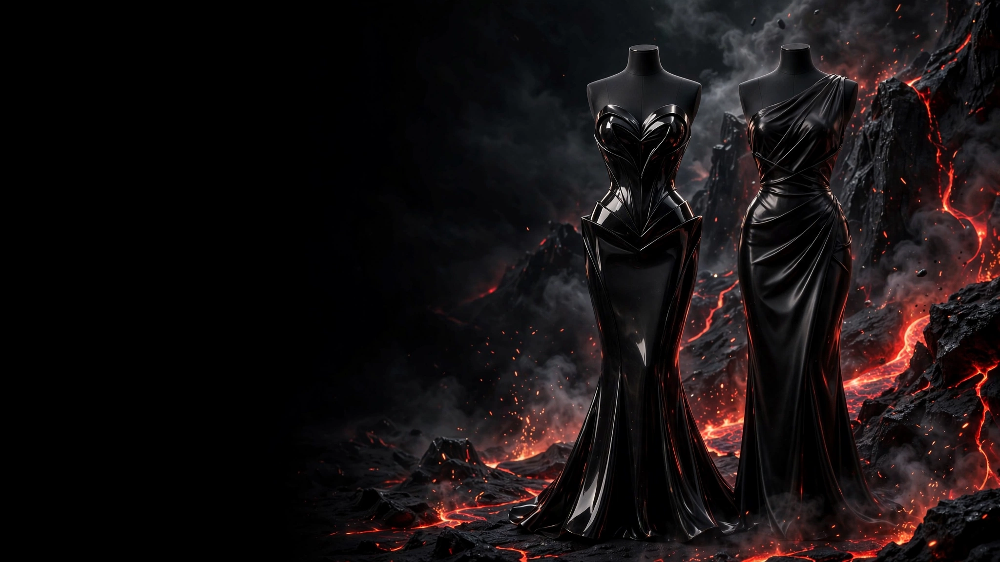
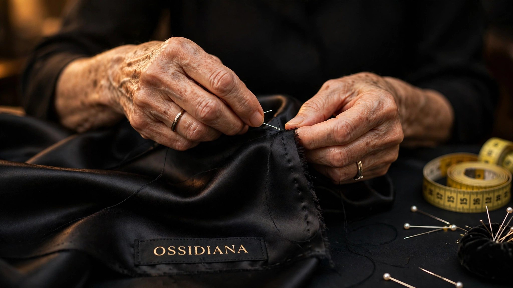
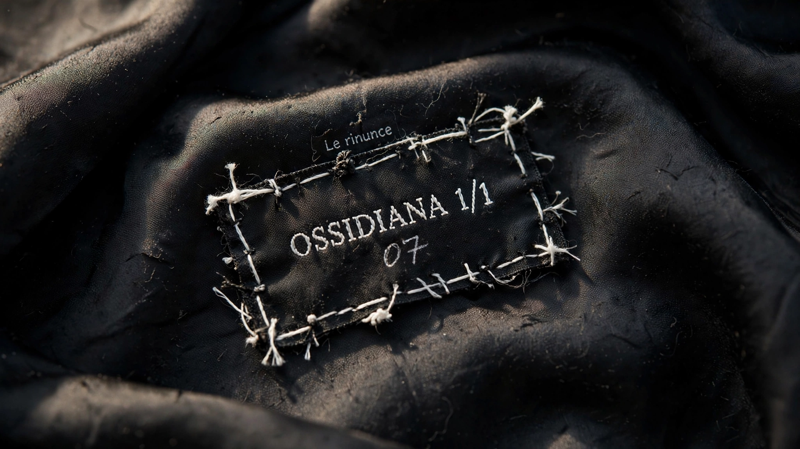

Ossidiana nasce quando la lava incontra l'aria e si raffredda in un istante.
Disegniamo abiti allo stesso modo: pochi gesti, materia densa, nessun rumore. Fondata a Milano nel 1928, meno di venti abiti l'anno.
- 1928Fondata a Milano
- < 20Abiti l'anno
- 30+Misure prese a mano
- 1/1Caldera, pezzo unico
Una pietra che non ha avuto il tempo di diventare cristallo.
L'ossidiana è vetro vulcanico. Nasce quando una lava ricca di silice si raffredda così in fretta che la materia non riesce a ordinarsi in cristalli. Da quella fretta vengono tre proprietà, e da ognuna un modo di lavorare.
- INessun cristallo
Senza una struttura interna che si ripete, ogni frammento di ossidiana è diverso dall'altro. Per questo non partiamo da una taglia: partiamo dal corpo di chi indosserà l'abito.
- IIFrattura concoide
Si spezza in curve lisce, con bordi più sottili di una lama chirurgica. È la precisione che cerchiamo nel taglio: una linea sola, netta, senza ripensamenti.
- IIISpecchio nero
Per millenni è stata levigata per farne specchi. Un abito Ossidiana non deve nascondere chi lo porta: deve restituirne l'immagine, più nitida.

Il tempo di un abito, senza scorciatoie.
Dalle prime misure alla consegna passano da sei a dodici settimane. Per i capi con piume o strutture scultoree, fino a otto mesi.
- 01Il primo incontro
Un'ora in atelier. Parliamo di dove porterai l'abito, prima ancora di come dovrà essere.
- 02Le misure
Oltre trenta misure prese a mano: busto, vita, fianchi, lunghezze, e il modo in cui ti muovi.
- 03La prova in tela
Prima del tessuto vero, l'abito viene costruito in tela grezza e corretto direttamente sul corpo.
- 04Il taglio
Solo ora si taglia il tessuto definitivo. Una volta sola: velluto e seta non perdonano.
- 05La seconda prova
Rifiniture su lunghezze, vestibilità e dettagli, finché l'abito cade come deve.
- 06La consegna
In atelier, con l'abito pronto e un'ultima occhiata allo specchio.
Pochi gesti, materia densa, nessun rumore.

Quello che abbiamo scelto di non fare.
- Niente saldi. Un abito costruito su di te non perde valore a fine stagione.
- Niente taglie standard. I prezzi sono il punto di partenza, le misure si prendono in prova.
- Niente produzione in serie. Meno di venti abiti l'anno, tutti cuciti a mano a Milano.
- Niente repliche. Caldera esiste in un solo esemplare, e così resterà.
- Niente vendita online. Si prova, si sceglie e si conferma in atelier.